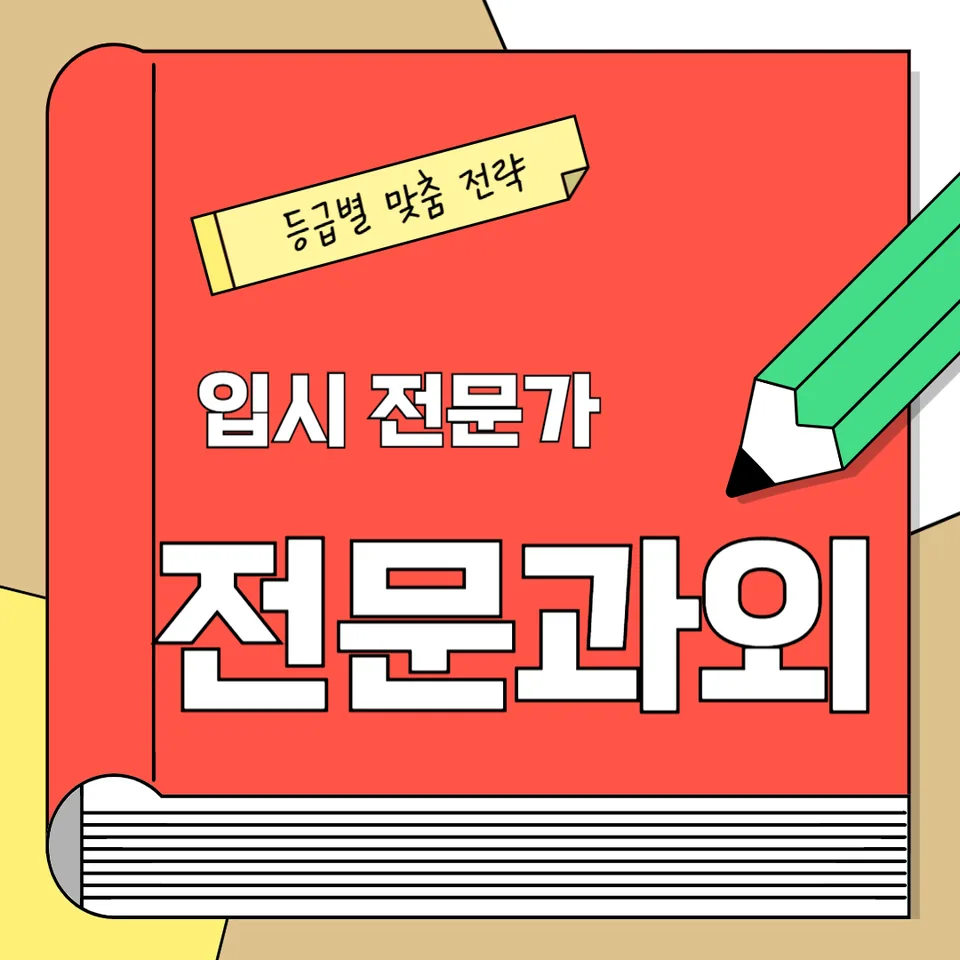

PageType : SUBJECT
URL : /경기도과외/용인시과외/기흥구과외/언남동과외/언남동영어과외/
지역 교육환경이 영어 학습에 미치는 영향
언남동영어과외를 시작하면 먼저 체감하는 차이가 있습니다. 학교 주변 학습 분위기가 비교적 촘촘하게 형성되어 있는 편이라, 학생들은 영어를 “수업에서만 끝내는 과목”으로 두기 어렵습니다. 언남동영어과외에서 다루는 학습 루틴도 그래서 짧게 끊어 실행하는 형태가 많아지는데, 같은 시간을 써도 결과가 달라지는 이유는 학습이 이어지는 방식에 있습니다. 수업 직후에 듣기·읽기 자료를 조금만 더 보면 다음 날 새로 시작하는 부담이 줄고, 그 작은 연결이 영어 실력의 누적을 돕습니다.
지역마다 교내 활동과 독서 문화의 비중이 다르듯, 언남동영어과외를 받는 학생들 역시 “영어를 접하는 빈도”가 곧 공부 습관으로 이어집니다. 어떤 학생은 주말에 짧은 영어 콘텐츠를 반복하고, 또 다른 학생은 학교에서 받은 영어 학습 자료를 중심으로 복습을 이어갑니다. 이때 중요한 점은 문법을 먼저 외우거나 단어를 오래 붙잡는 방식이 아니라, 듣기와 독해가 함께 돌아가도록 학습의 흐름을 잡는 것입니다. 언남동영어과외에서는 어휘와 문장 이해가 분리되지 않게 지도하며, 학생이 자연스럽게 구문 감각을 만들어 갈 수 있도록 시간을 배분합니다.
학교마다 달라지는 영어 평가 방식
학교 영어 평가는 대체로 시험 문항 구성만으로 끝나지 않습니다. 언남동영어과외 학생들이 수업을 진행하면서 가장 먼저 맞닥뜨리는 변수는 ‘무엇을 점수로 보는가’가 학교마다 다르다는 점입니다. 어떤 학교는 내신에서 독해 중심 비중이 크고, 수행평가에서는 발표나 글쓰기 태도가 반영되기도 합니다. 언어 평가는 결국 학교가 학생에게 요구하는 학습 태도를 보여주기 때문에, 언남동영어과외에서도 평가 방식에 맞춘 학습 과정이 필요해집니다. 같은 읽기 활동이라도 학교에서 원하는 유형으로 문장 이해를 재구성해야 오답이 줄어듭니다.
또 시험 기간에는 듣기 문항이 강조되거나, 반대로 읽기 속도가 더 중요해지는 식으로 균형이 바뀝니다. 이 변화에 대응하려면 ‘오늘 할 공부’가 내일의 오답 정리로 이어져야 합니다. 언남동영어과외에서는 시험이 다가올수록 문제 풀이 자체보다, 학생이 왜 틀리는지 확인하는 습관을 먼저 다듬습니다. 독해에서 놓친 어휘가 문장 흐름을 끊어버렸는지, 구문을 잘못 해석해 문장 단위 의미가 흔들렸는지 같은 원인을 추적하는 과정이 핵심이 됩니다. 그런 이유로 문법 설명만 늘리는 방식은 오래 가기 어렵고, 실제 문제에서 문법을 적용하는 경험이 누적되어야 합니다.
학생들이 영어에서 어려움을 느끼는 시점
영어 학습에서 어려움이 시작되는 시점은 대개 ‘새로운 단원이 어려워서’라기보다, 누적된 학습이 갑자기 정체되기 때문입니다. 언남동영어과외를 받는 학생들도 특정 주차부터 “문장을 읽어도 이해가 안 된다”는 느낌을 자주 말합니다. 특히 독해에서 문장 구조를 빠르게 잡지 못하면, 읽기는 계속 되는데 의미가 남지 않는 현상이 나타납니다. 이때 학생이 느끼는 답답함은 듣기·읽기 전반의 불균형에서 비롯되기도 합니다. 듣기는 들려도 문장으로 이어지지 않고, 읽기는 되는데 실제 문장 활용이 약해지면서 자신감이 흔들립니다.
이 시기에 학부모가 가장 고민하는 지점도 비슷합니다. “단어를 외우는데 왜 독해가 안 늘지?” “문법을 봤는데 시험에서 왜 흔들리지?” 같은 질문이 생기기 쉽습니다. 언남동영어과외에서는 그 답을 ‘더 많이’가 아니라 ‘어떤 순서로’에 둡니다. 예를 들어 어휘 학습이 문장 속 구문으로 연결되는지, 문법이 실제 문제의 문장 이해로 번역되는지 확인합니다. 학생이 영어에 흥미를 잃는 국면은 대개 성과 확인이 늦을 때 오기 때문에, 짧은 복습과 오답 정리로 “이해가 되는 순간”을 자주 만들어 주는 방식이 필요합니다.
학년 변화에 따른 영어 학습의 차이
학년이 올라가면 영어 부담은 단순히 분량이 늘어서가 아니라, 요구하는 처리 방식이 바뀌기 때문입니다. 언남동영어과외를 통해 중·고 과정에 접어드는 학생들은 독해와 문장 이해의 속도뿐 아니라, 문장 전체 의미를 빠르게 정리하는 능력을 요구받습니다. 같은 문장이라도 하위 학년에서는 단어 중심으로 접근했다면, 상위 학년에서는 구문과 연결 요소를 통해 의미를 묶어야 합니다. 이 차이가 크기 때문에 학생들은 “공부를 하는데 성장이 느린 느낌”을 받곤 합니다.
학년 전환 시기에는 어휘가 누적되는 방식도 달라집니다. 반복 노출은 단어를 아는 상태로 끝나는 것이 아니라, 문장 속에서 적절한 의미로 선택하게 만들어야 합니다. 언남동영어과외에서는 어휘를 단독 암기에서 끝내지 않고, 문장 이해 단계로 옮겨가는 연습을 합니다. 또한 듣기와 읽기의 균형을 맞추어, 들리는 문장 패턴이 읽기에서 다시 떠오르게 하는 흐름을 만듭니다. 이렇게 학습이 연결되면 공부 습관이 자연스럽게 자리 잡고, 시험 직전에도 단기 집중으로만 흔들리지 않는 자기주도학습의 기반이 됩니다.
내신과 수행평가를 함께 준비하는 방법
언남동영어과외를 받는 학생들은 내신을 준비하면서 수행평가까지 동시에 고려하게 됩니다. 이 두 평가는 성격이 다르기 때문에 준비 방식도 달라져야 합니다. 내신은 독해·문법·어휘가 한 시험 안에서 빠르게 교차되고, 수행평가는 학생이 표현한 과정과 태도가 반영되는 경우가 많습니다. 그래서 언남동영어과외에서는 “읽고 끝내는 공부”가 아니라, 학교에서 요구하는 산출물로 연결되는 습관을 만듭니다. 문장 구조를 이해한 뒤 스스로 짧은 문장을 만들어 보는 활동은 내신에서의 오답 감소로도 이어질 수 있습니다.
시험 기간이 다가오면 학습 패턴도 변합니다. 어떤 학생은 문제 수만 늘리고, 오답은 정리하지 않은 채 다음 회차로 넘어가 성적이 흔들립니다. 언남동영어과외에서는 오답의 원인을 분석하고 반복되는 실수를 줄이는 루트를 먼저 잡습니다. 독해에서 틀린 문장의 구조를 다시 읽고, 어휘가 문장 흐름을 어떻게 바꾸는지 확인한 다음, 복습으로 연결하는 과정이 반복되어야 합니다. 복습은 ‘어제 한 내용을 다시’가 아니라, 학생이 같은 실수를 다시 하지 않게 만드는 장치가 됩니다. 이런 연결이 있으면 내신과 수행평가 사이의 간격이 줄어들고, 학교와 가정에서 이어지는 학습 환경이 자연스럽게 유지됩니다.
꾸준한 학습 습관이 만드는 영어 실력
영어 실력은 단기간에 폭발적으로 늘기보다, 공부습관이 누적되며 형태를 잡습니다. 언남동영어과외에서는 “매일 같은 양”보다 “끊기지 않는 흐름”을 더 강조합니다. 예를 들어 듣기를 매일 조금씩 하면, 단어가 문장 속에서 어떻게 조합되는지 감각이 유지됩니다. 읽기도 마찬가지로, 긴 지문을 한 번에 해결하기보다 문단 단위로 이해를 쌓아가면 문장 이해가 안정됩니다. 이 과정에서 학생은 영어를 어렵게 느끼기보다, 점점 예측 가능한 패턴으로 받아들이게 됩니다.
학부모가 자주 느끼는 고민은 결국 지속의 문제입니다. 학교 수업이 끝나면 스마트폰과 과제가 몰리면서 공부가 무너지고, 그 틈에서 오답이 다시 쌓입니다. 언남동영어과외에서는 자기주도학습이 “의지”가 아니라 “확인 가능한 루틴”에서 시작된다고 봅니다. 오늘 무엇을 공부했는지, 무엇이 남았는지, 다음 날 어디서 이어갈지 기록하는 방식으로 복습과 오답 정리가 자연스럽게 연결됩니다. 그렇게 영어를 꾸준히 공부하는 습관이 자리 잡으면, 시험 기간에도 학습 계획이 흐트러지지 않고 시간도 효율적으로 사용하게 됩니다.
복습과 오답 관리가 중요한 이유
복습과 오답 관리는 선택이 아니라 학습의 구조입니다. 언남동영어과외에서 학생들이 가장 크게 성장하는 구간은 대개 “틀린 뒤에 무엇을 했는가”가 바뀌었을 때입니다. 독해에서 정답을 맞혔더라도 이해가 얕았으면 다음 시험에서 비슷한 문항에 다시 흔들립니다. 반대로 오답을 분석해 문장 구조를 다시 잡고, 어휘가 의미를 어떻게 바꾸는지 확인하면 비슷한 유형에서 반응이 달라집니다. 복습이 쌓일수록 시험 전날 벼락치기에 의존하지 않게 됩니다.
오답 정리는 구문 이해와 문법 적용 경험을 함께 강화합니다. 학생이 어떤 부분에서 끊겼는지 보면 문법이 지식으로만 남아 있었는지, 아니면 실제 문장 이해로 이어졌는지 드러납니다. 언남동영어과외에서는 오답을 단순히 ‘정답 표시’로 끝내지 않고, 다음 학습으로 이어질 질문을 남기는 방식으로 관리합니다. 예를 들어 “왜 이 어휘가 여기서 그렇게 해석되는가”, “이 연결어는 문장 흐름을 어떻게 바꾸는가”처럼 반복되는 실수를 줄이게 합니다. 정기적인 복습으로 학습 내용이 장기 기억으로 연결되면, 오답이 줄어드는 속도도 빨라집니다.
영어 학습에서 확인해야 할 핵심 요소
언남동영어과외에서 학습 과정을 점검할 때는 ‘진행 여부’보다 ‘연결의 품질’을 봅니다. 영어 학습은 독해, 문법, 어휘, 듣기, 문장 이해가 따로 움직일 때 정체가 생깁니다. 학생마다 학습 속도와 성장 과정은 다르지만, 공통적으로 확인해야 할 핵심 요소는 있습니다. 첫째, 학교 시험 범위와 학습 계획이 연결되고 있는지입니다. 둘째, 학생이 새로운 내용을 배운 뒤에 복습과 오답 정리를 통해 다음 단계로 넘어가는지 확인해야 합니다. 셋째, 시간이 흘렀을 때도 같은 유형에서 반응이 유지되는지 봐야 합니다. 언남동영어과외는 이런 점검이 반복될수록 자기주도학습이 자리 잡는다고 설명합니다.
또 지역 학생들에게서 자주 보이는 학습 특징도 함께 고려합니다. 어떤 학생은 진도가 빠르지만 복습이 약해 오답이 누적되고, 어떤 학생은 꼼꼼하지만 시간이 부족해 시험 직전 균형이 무너집니다. 그래서 언남동영어과외에서는 시간 관리와 공부 습관의 조정을 같이 다룹니다. 시험 기간에는 듣기와 읽기 균형을 재정렬하고, 내신 준비의 중심이 되는 문장 이해를 중심으로 학습이 돌아가게 합니다. 이 과정에서 영어에 대한 흥미가 다시 살아나고, 학생이 스스로 영어 실력을 확인하는 순간이 생깁니다. 학습 과정에서 중요한 건 속도가 아니라, 꾸준히 이어지는 연결입니다.
- 학교 시험 범위와 학습 계획이 연결되고 있는지 확인합니다.
- 독해·문법·어휘를 분리하지 않고 함께 학습하는 습관을 기릅니다.
- 오답의 원인을 분석하고 반복되는 실수를 줄이는 과정을 이어갑니다.
- 정기적인 복습으로 학습 내용을 장기 기억으로 연결합니다.
자주 묻는 질문
영어 학습은 언제부터 체계적으로 준비하는 것이 좋을까요?
언남동영어과외를 기준으로 보면, 단원이 시작되기 전에 학습 습관을 먼저 점검하는 시점이 중요합니다. 특히 독해에서 문장 이해가 흔들리기 시작하기 전부터 듣기·읽기·어휘가 연결되도록 루틴을 잡아두면 부담이 커지는 시기에도 덜 흔들립니다.
학교 내신과 모의고사는 어떻게 함께 준비해야 하나요?
언남동영어과외에서는 내신 범위에 맞춘 독해 훈련과 오답 정리를 기본으로 두고, 모의고사는 같은 유형에서 학생의 반응 속도와 문장 흐름 파악을 점검하는 용도로 활용합니다. 두 흐름이 충돌하지 않게 복습 주기를 정하는 것이 핵심입니다.
영어 독해 실력은 어떤 과정으로 향상될 수 있나요?
독해는 단어를 아는 것에서 끝나지 않고 구문과 연결 요소를 통해 의미를 묶는 과정으로 자랍니다. 언남동영어과외에서는 문단 단위 이해를 반복하고, 틀린 문장은 다시 구조를 해석하는 복습으로 이어가면서 성장 단계를 쌓습니다.
어휘와 문법은 어떤 순서로 학습하는 것이 효과적인가요?
어휘와 문법을 따로 외우기보다 문장 속에서 적용되는 순간을 먼저 경험하는 순서가 효과적입니다. 언남동영어과외에서는 어휘 학습이 문장 이해로 이동하도록 반복하고, 문법은 실제 문제의 문장 해석에 연결되게 연습합니다.
공부 습관을 꾸준히 유지하려면 무엇이 중요할까요?
언남동영어과외에서는 동기보다 구조를 만듭니다. 하루 학습이 끝난 뒤 남은 오답을 정리하고, 다음 복습이 어디서 시작되는지 확인하는 방식으로 자기주도학습을 단단히 만드는 것이 중요합니다. 학습 계획이 끊기지 않으면 영어 실력의 변화도 꾸준히 확인됩니다.
